The launch course. It is being built one unit at a time, each unit complete before the next begins: full plate of lesson materials, a review day, and a unit test built to a published blueprint with every item tagged. The primary source layer draws on the audited bank at The Primary Source Project.
This course follows the United States from its colonial beginnings to the present. The first half moves through colonization, independence, the Constitution, expansion, reform, sectional conflict, the Civil War, and Reconstruction. The second begins with the industrial transformation of the Gilded Age and continues through the Progressive Era, the Twenties, depression and world war, the Cold War, the civil rights movement, and modern America. Schools can teach the survey in one year or divide it at 1877, when Reconstruction ended. The course map preserves both shapes because districts organize US History in both ways.
Each unit will follow the same full-plate model introduced by the Progressive Era. Lessons come with readings, guided notes, slides and speaker notes, activities, notebook work, and quick checks, followed by a review day and a test built to a published blueprint. The planner takes the pieces a teacher selects and places them on a year or unit calendar, then checks coverage against the test. The Progressive Era is complete and free as the sample unit, and Colonial America, the Founding, Early Republic and Expansion, Jackson and Reform, Sectional Crisis and Civil War, Reconstruction, the Gilded Age, Imperialism and World War I, the Twenties, Depression and New Deal, World War II, The Cold War, Civil Rights, and Modern America are complete with All-Access. Reconstruction completes the course: every unit in the plan is finished and available.
| Unit | Span | Status |
|---|---|---|
| Colonial America | Colonization through the French and Indian War | Available with All-Access |
| The Founding | Revolution, the Constitution, and the new republic | Available with All-Access |
| Early Republic and Expansion | From Washington's precedents and Hamilton's program through the Louisiana Purchase, the War of 1812, the Monroe Doctrine, the Missouri Compromise, and the war with Mexico | Available with All-Access |
| Jackson and Reform | Democracy, reform movements, and westward expansion | Available with All-Access |
| Sectional Crisis and Civil War | The road to disunion and the war | Available with All-Access |
| Reconstruction | Rebuilding the Union and its unfinished work | Available with All-Access |
| The 1877 split. Schools that teach US History in two parts divide the course here, at the end of Reconstruction: Part 1 runs from colonization to 1877, Part 2 from 1877 to the present. The year planner offers all three shapes, the full survey and both parts. | ||
| The Gilded Age | Industry, labor, immigration, and the cities | Available with All-Access |
| The Progressive Era | Reform from the muckrakers through the Nineteenth Amendment | Available now, free sample |
| Imperialism and World War I | Expansion overseas, the Spanish-American War, and the First World War | Available with All-Access |
| The Twenties | Prosperity, culture conflict, and the crash | Available with All-Access |
| Depression and New Deal | The Great Depression and the federal response | Available with All-Access |
| World War II | The home front and the war abroad | Available with All-Access |
| The Cold War | Containment, Korea, and the nuclear age | Available with All-Access |
| Civil Rights | The movement and its legislation | Available with All-Access |
| Modern America | 1968 to the present | Available with All-Access |
| The course reviews. Each review compresses its span into band days built for the end of the course: a packet, a forty-term sprint, a practice set, and a skills task per day, a study guide and crossword on a flex day, and a 50-point practice test. | ||
| Course Review | All fifteen units in eight band days | Available with All-Access |
| Early Course Review | The first six units, 1491 to 1877, in three band days | Available with All-Access |
| Modern Course Review | The last nine units, 1877 to the present, in five band days | Available with All-Access |
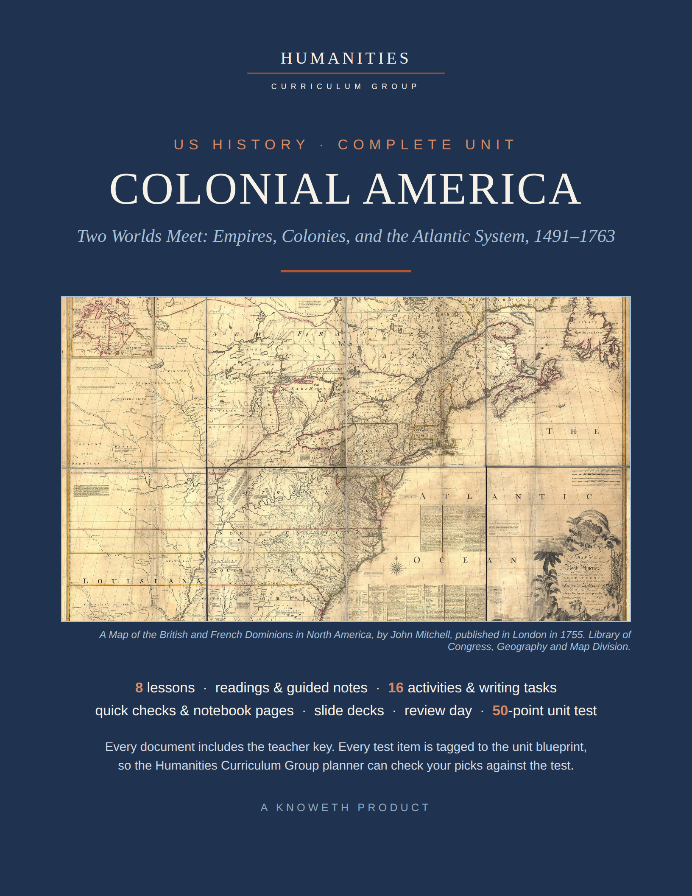
Two worlds in 1491, Spain's empire of conquest and France's empire of trade, Jamestown and the tobacco Chesapeake, covenant New England, the many-peopled middle colonies, the Atlantic system and the slave trade, colonial self-government and the Great Awakening, and the French and Indian War's hinge of 1763. Fifty-one documents, a slide deck for every lesson, and a 50-point test tagged to a published blueprint.
See the full unit
The imperial crisis and the Stamp Act, tea and the first shots, the Declaration's argument, the war on its battlefields and its home fronts, the Confederation's troubles and its land ordinances, the Convention's compromises, the ratification fight, and the Bill of Rights. Fifty-one documents, a slide deck for every lesson, and a 50-point test tagged to a published blueprint.
See the full unit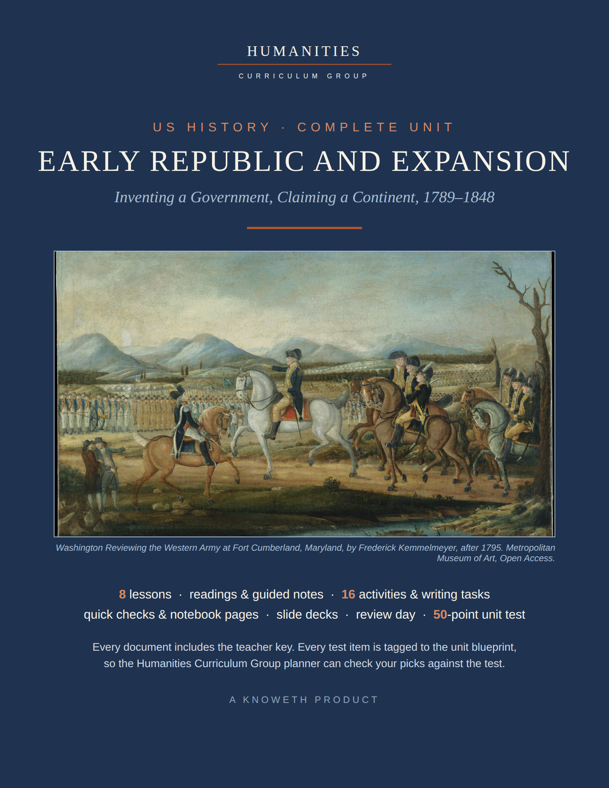
Washington's republic and Hamilton's program, the Alien and Sedition Acts and the election of 1800, Jefferson's purchase and Marbury, Lewis and Clark among the peoples of the West, the War of 1812, the American System and the Marshall Court, the Monroe Doctrine and the Missouri Compromise, and Manifest Destiny's war with Mexico. Fifty-one documents, a slide deck for every lesson, and a 50-point test tagged to a published blueprint.
See the full unit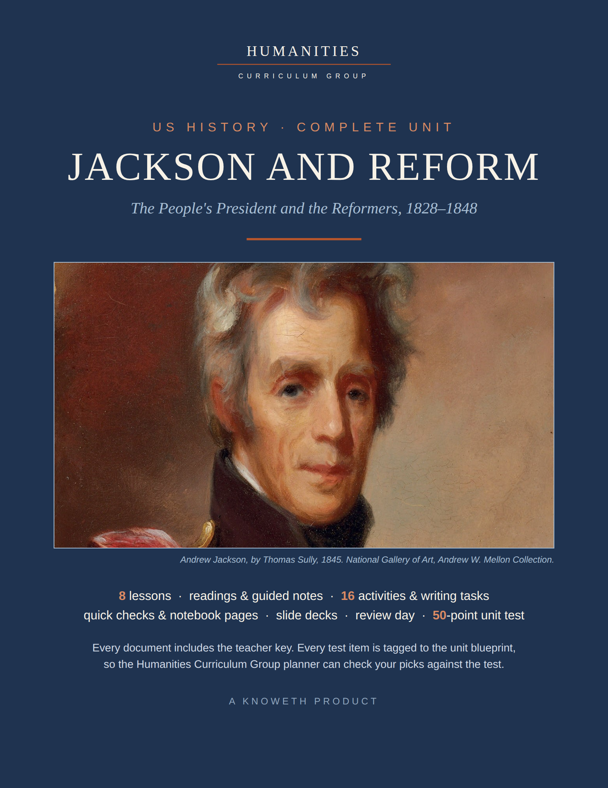
The election of 1828 and the widened electorate, Indian removal and the Cherokee case, nullification and the Force Bill, the Bank War and the panic, factories and the telegraph, revival and reform, abolition turning immediate, and Seneca Falls. Fifty-one documents, a slide deck for every lesson, and a 50-point test tagged to a published blueprint.
See the full unit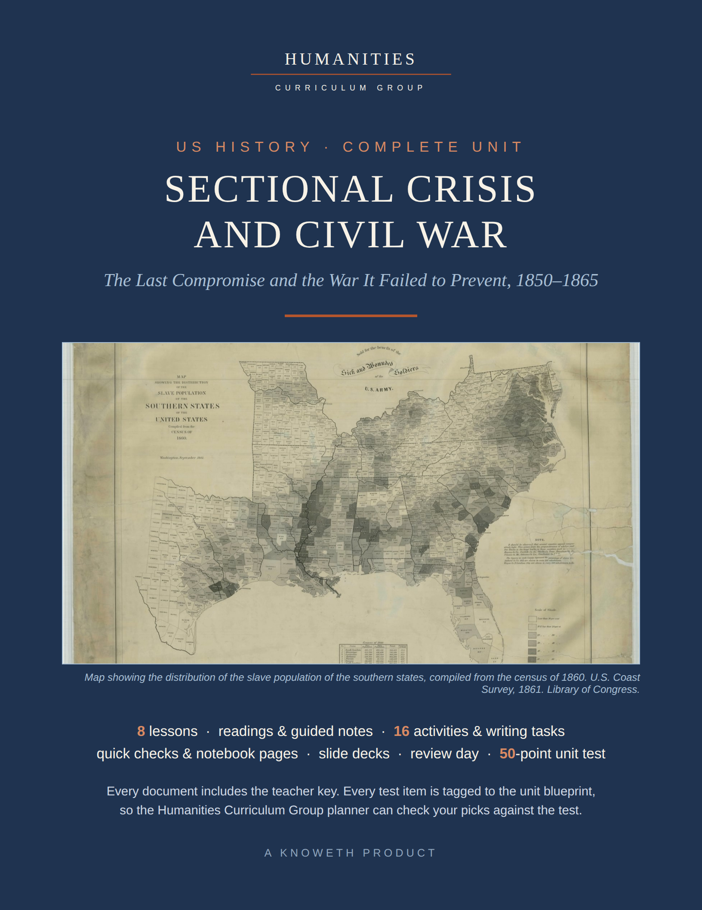
The Compromise of 1850 and the Fugitive Slave Act, the antislavery argument at full voice, Kansas-Nebraska and Bleeding Kansas, the Republican Party and Dred Scott, the debates, John Brown, and secession, the war from Sumter to Antietam, emancipation and 1863, and total war to Appomattox. Fifty-one documents, a slide deck for every lesson, and a 50-point test tagged to a published blueprint.
See the full unit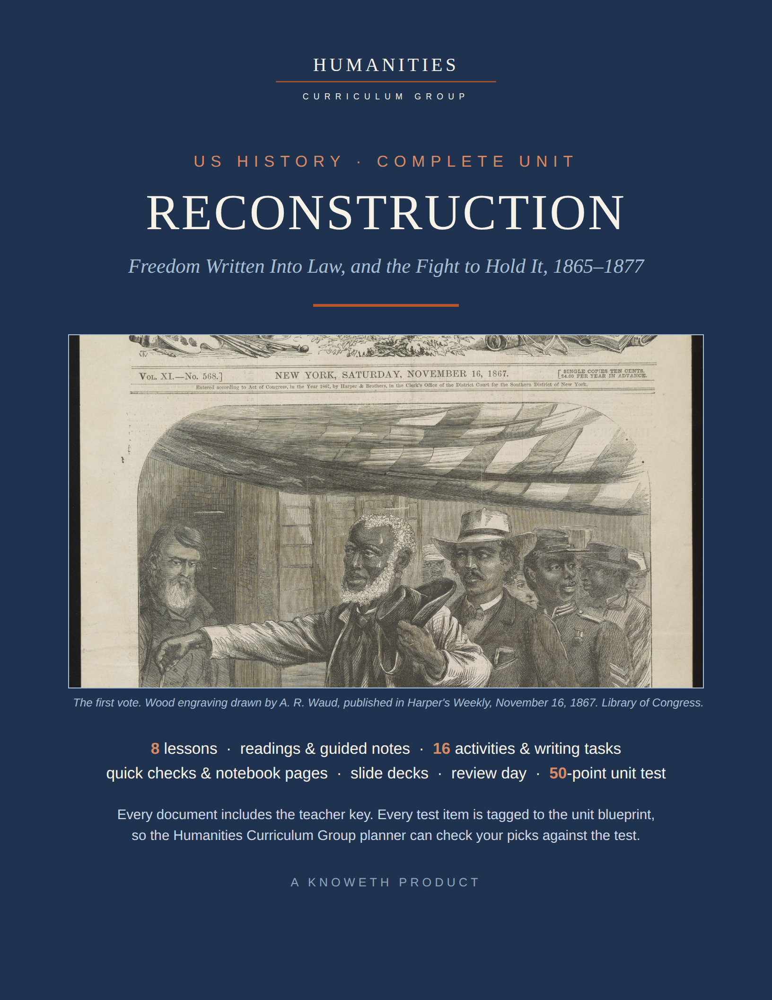
Johnson's restoration and the Black Codes, the Thirteenth Amendment and the Civil Rights Act, the Fourteenth Amendment and the Reconstruction Acts, the vote and Black officeholding, land, labor, schools, and churches, the Klan and the Enforcement Acts, the retreat, and 1876 and the end. Fifty-one documents, a slide deck for every lesson, and a 50-point test tagged to a published blueprint.
See the full unit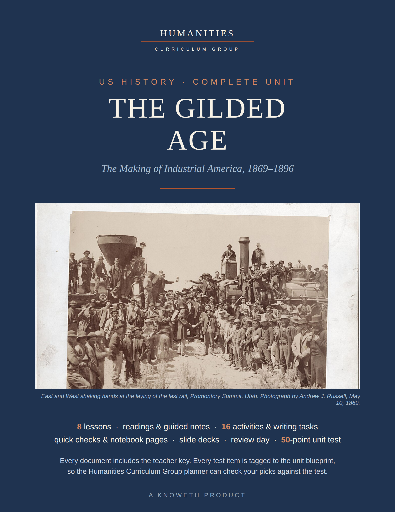
Industry, labor, immigration, the cities, the West, and the protest politics of the 1890s. Fifty-one documents, a slide deck for every lesson, and a 50-point test tagged to a published blueprint.
See the full unit
Expansion overseas, the Spanish-American War, the Philippines, the First World War at the front and at home, and the turn inward in 1920. Fifty-one documents, a slide deck for every lesson, and a 50-point test tagged to a published blueprint.
See the full unit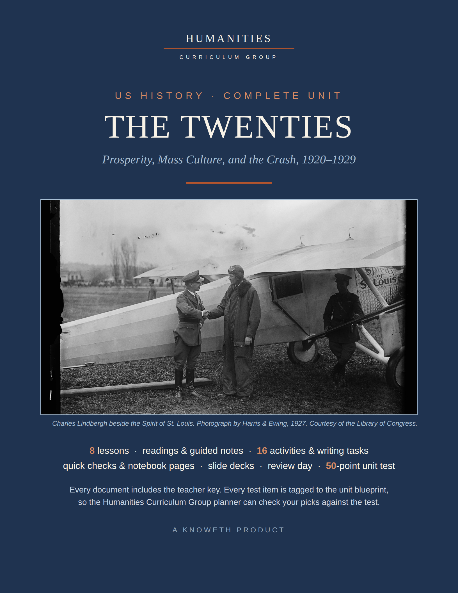
Mass production and consumer culture, radio and the movies, the automobile, Prohibition, the culture wars, the Harlem Renaissance, and the weak spots under the boom. Fifty-one documents, a slide deck for every lesson, and a 50-point test tagged to a published blueprint.
See the full unit
The human cost of the collapse, Hoover and the limits of voluntarism, the Hundred Days, the alphabet agencies, the critics of 1935, the Second New Deal, labor rising, and what the New Deal changed and what it did not. Fifty-one documents, a slide deck for every lesson, and a 50-point test tagged to a published blueprint.
See the full unit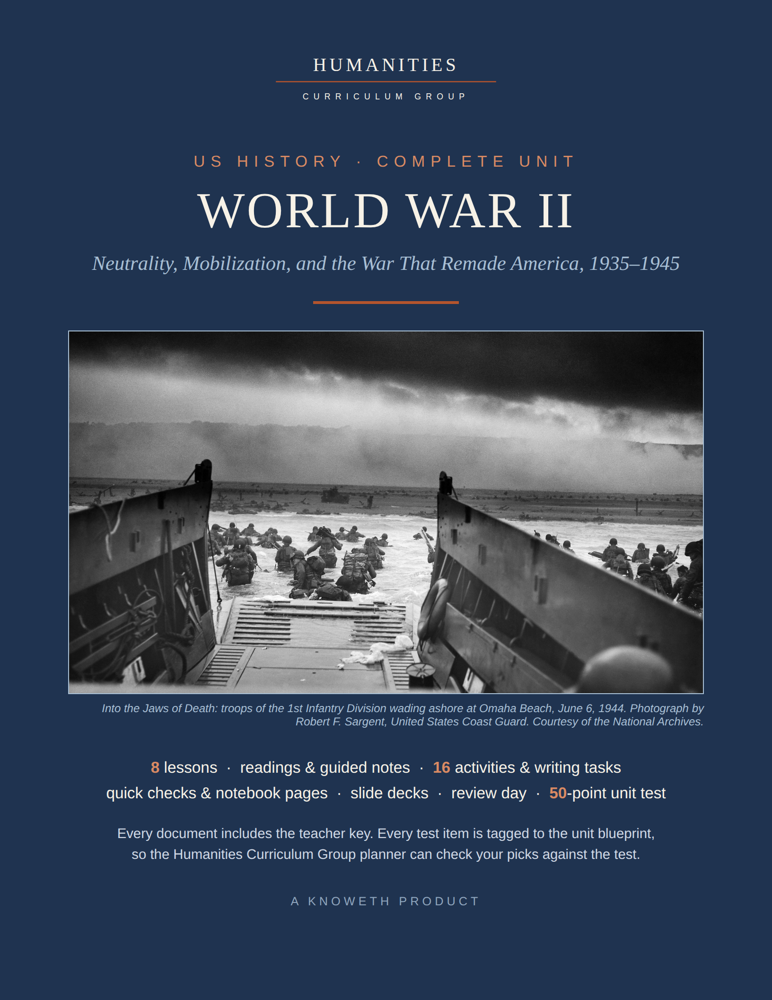
The road from neutrality to Pearl Harbor, mobilization and the home front, the wars in Europe and the Pacific, democracy tested at home, the Holocaust, and the atomic reckoning. Fifty-one documents, a slide deck for every lesson, and a 50-point test tagged to a published blueprint.
See the full unit
Containment taking shape, the war in Korea, the Red Scare at home, the nuclear shadow, Cuba and the missile crisis, Vietnam, détente and its collapse, the second Cold War, and the fall of the Wall. Fifty-one documents, a slide deck for every lesson, and a 50-point test tagged to a published blueprint.
See the full unit
The groundwork before the famous decade, Brown and the massive resistance, Montgomery and Little Rock, the sit-ins and Freedom Rides, Birmingham and the March on Washington, the two great acts of 1964 and 1965, the northern turn and Black Power, Memphis, and the reckoning that followed. Fifty-one documents, a slide deck for every lesson, and a 50-point test tagged to a published blueprint.
See the full unit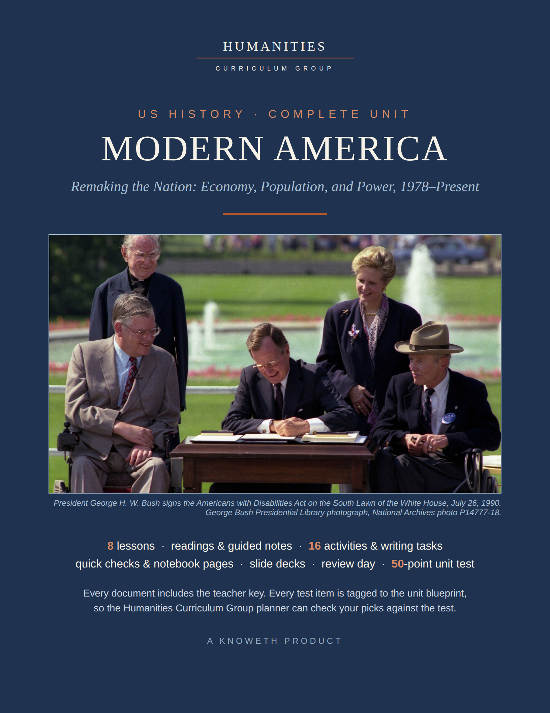
Stagflation and the tax revolt, the Reagan program and its limits, the Cold War's end at home, globalization and the digital transformation, a population remade by immigration and the Sun Belt, September 11 and the war on terror, the Great Recession, and the polarized present. Fifty-one documents, a slide deck for every lesson, and a 50-point test tagged to a published blueprint.
See the full unit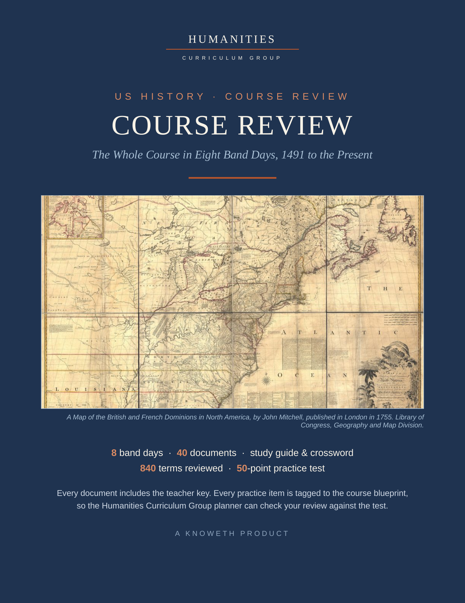
The whole course compressed into eight band days, two units a day: a packet, a forty-term sprint, an eighteen-question practice set, and a skills task for each. A study guide over all 840 terms, a 60-answer crossword, and a 50-point practice test that assesses every one of the fifteen units at least twice.
See the full unit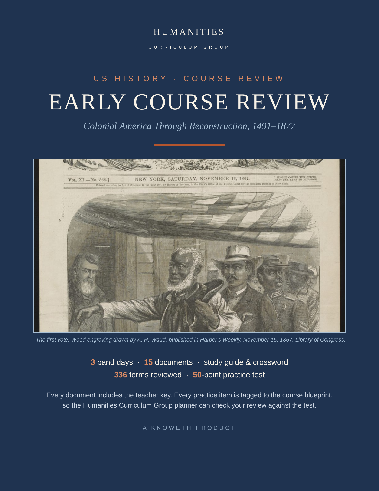
The first half of the course, 1491 to 1877, in three band days: the colonies and the Founding, the early republic and Jackson's age, the sectional crisis and Reconstruction. A study guide over 336 terms, a 24-answer crossword, and a 50-point practice test.
See the full unit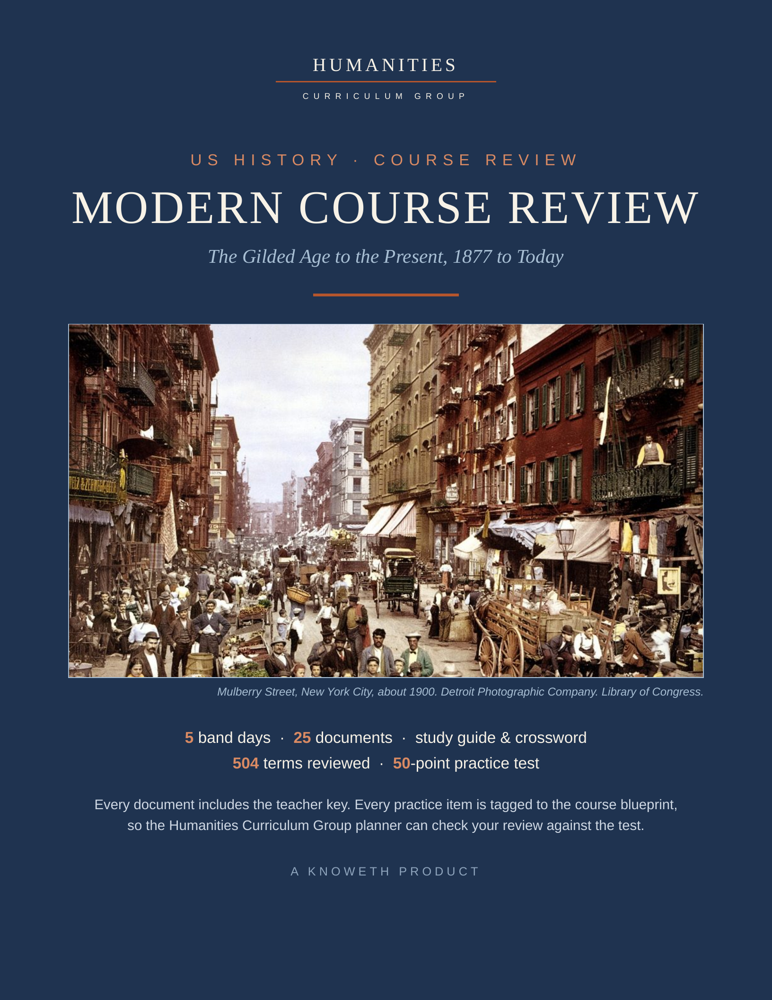
The modern half of the course, 1877 to the present, in five band days: industry and reform, empire and the Twenties, depression and total war, the Cold War and civil rights, Modern America and the long arc. A study guide over 504 terms, a 36-answer crossword, and a 50-point practice test.
See the full unit